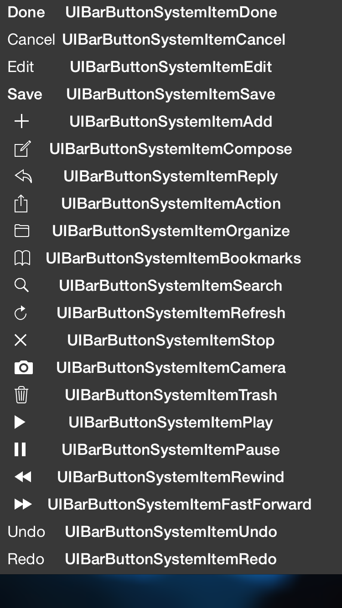

iOS block定义
Tagged as :
iOS
记录一下自己mac上安装的，并且每天都在用的软件
大名鼎鼎的印象笔记，功能强大；
一个xcode自定义“删除一行”快捷键的python脚本
# -*- coding:utf8 -*-
#
# 修改文件权限
# 添加自定义的ctr+D删除到xcode中 ...想实现这样一个功能： 某个视频类app中，一个上班族用户正在追某个感兴趣的视频，TA想每天下班回家后，TA追的那些个视频，在他上班期间已经下载完成了，TA回到家后不用下载了，直接可以看了 ...
这几天遇到的几个比较常见的问题及解决方法（记录一下）
ReactiveCocoa是一个将函数响应式编程范例带入Objective-C的开源库。由Josh Abernathy和Justin Spahr-Summers在对GitHub for Mac的开发过程中建立。上周，ReactiveCocoa ...
2015-02-04-UIBarButtonItem-all-types
UIBarButtonItem 所有系统样式(ios_8)，有图有真相

本着不重复造轮子的原则，app开发中或多或少用各种的开源库，用对了开源库，往往能代码风骚、效率恐怖~
做iOS也有几年了，整理一下开发中常用到的开源库 ...
- (NSString *)getMd5_16Bit_String:(NSString *)srcString{
//提取32位MD5散列的中间16位
NSString *md5_32Bit_String ...Page 1 / 1